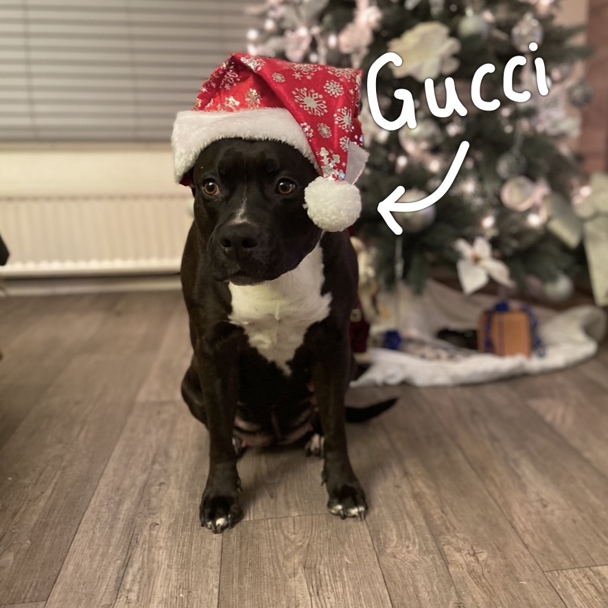
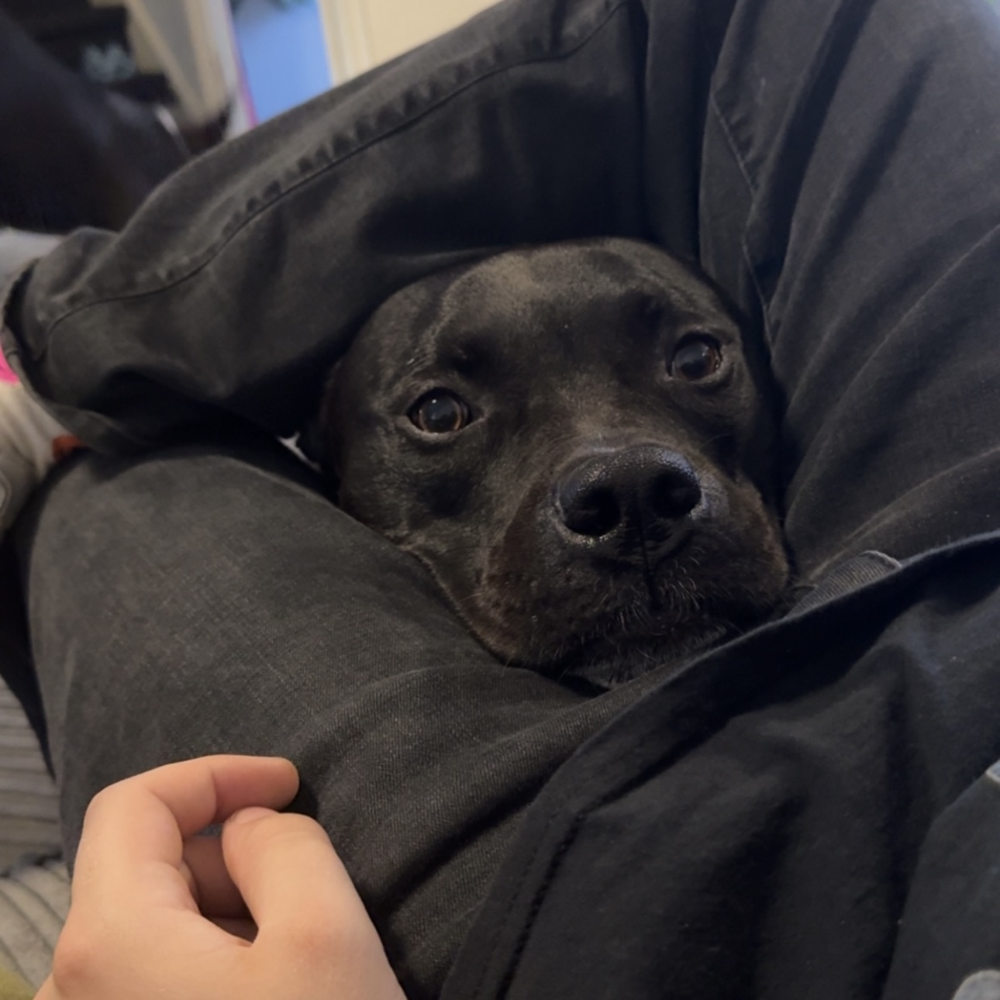
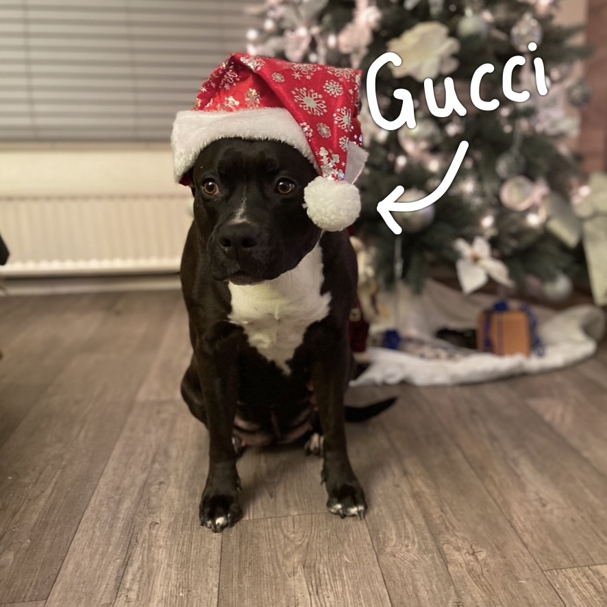
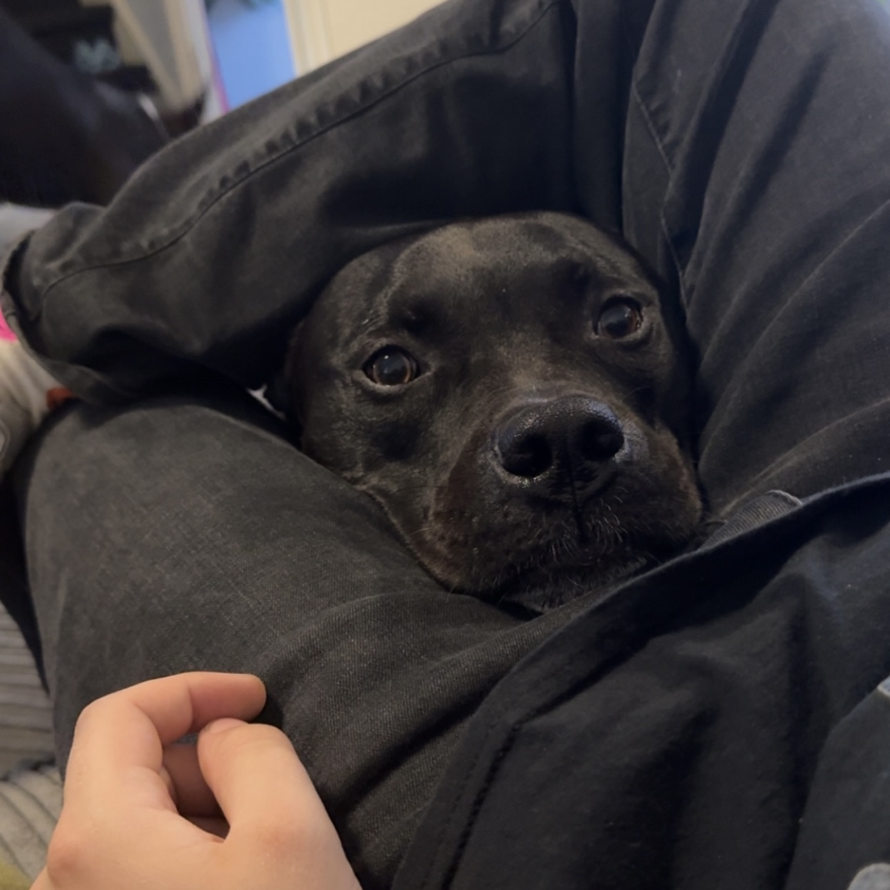

Valeria Cantsheva
Middelburg, Netherlands
While I consider myself to be a big house mouse, I do like to hang out at bars from time to time. In summer I like drinking cold beers in the city centre, while in colder months I prefer a nice hot tea. However most of my time is definitely spent at home. I enjoy drawing digitally, although don’t do this as often compared to a couple years ago, I like cooking, binge watching tv-shows and most importantly I like spending time with my dogs. Currently, I have two dogs: One named Gucci and the other one Mylo. Mylo is actually the son of Gucci who we took in about a year ago.
 


